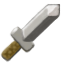

How To Play
Click the attack  button to attempt
to slay the enemy.
Slaying enemies will increase your score by 200.
Click the potion button to recover 30 health.
Slain enemies have a small chance of dropping a healing potion when they are defeated.
Click the run button to try and run from the currrent
enemie.
Running decreases your score by 75 points and is only has a 50% success rate. Failing could result in taking
damage.
At the end of combat, you can continue or end the game.
Dying will result in ending the game.